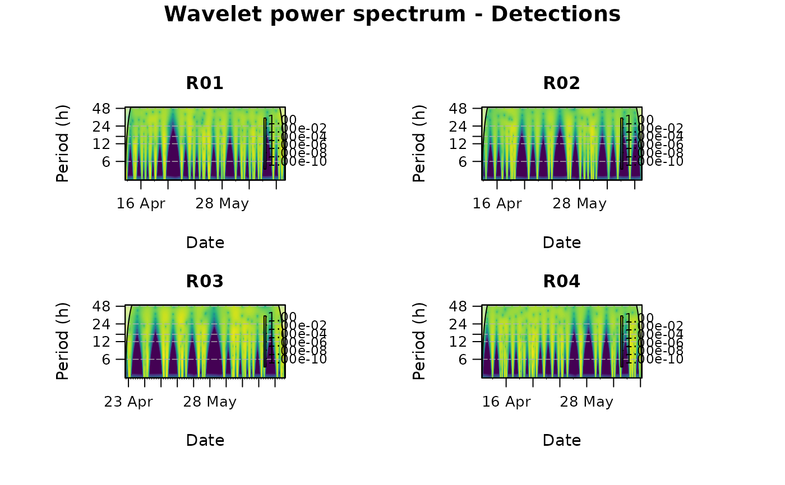

Computes and plots a continuous wavelet transform (CWT) scalogram per individual - a
time (x) by period (y) heat map of spectral power - showing how dominant rhythms in a detection or
environmental time series strengthen, weaken or shift through the study. It is the time-resolved
complement of plotPeriodogram (which gives one global spectrum per animal). This is a
wrapper around cwt_wst (Bolos & Benitez, 2022).
Usage
plotScalogram(
data,
variable,
id.col = NULL,
timebin.col = NULL,
id.groups = NULL,
wavelet.type = "MORLET",
gap.handling = c("zero", "mean", "locf", "interpolate"),
detrend = c("none", "linear", "diff", "loess"),
loess.span = 0.75,
standardize = FALSE,
power.scaling = c("log", "linear", "sqrt", "quantile"),
upper.value = NULL,
upper.quant = NULL,
shared.scale = FALSE,
mask.coi = FALSE,
period.range = c(3, 48),
axis.periods = c(6, 12, 16, 24, 48),
time.unit = c("hours", "mins", "days"),
color.pal = NULL,
min.days = NULL,
date.format = NULL,
main = NULL,
cex = 1,
ncol = 1,
cores = 1,
file = NULL,
width = NULL,
height = NULL,
res = 300,
...
)Arguments
- data
A
mobyDataor data frame of binned detections / time-based measurements. Gaps are allowed (seegap.handling).- variable
Name of the numeric column to analyse.
- id.col
Name of the column containing animal IDs. Defaults to
"ID".- timebin.col
Name of the column containing time bins (in POSIXct format). Defaults to
"timebin".- id.groups
Optional named list of ID groups (one block of panels each).
- wavelet.type
Wavelet passed to
cwt_wst'swname: "MORLET" (default), "DOG", "PAUL", "HAAR" or "HAAR2".- gap.handling
How internal gaps are filled: "zero" (absence; default), "mean", "locf" (last observation carried forward) or "interpolate" (linear interpolation).
- detrend
One of "none" (default; demean), "linear" (remove OLS trend), "diff" (first difference) or "loess" (residuals of a LOESS fit).
diff/loessare high-pass - use with care.- loess.span
Span for
detrend = "loess". Defaults to 0.75.- standardize
Logical; z-score each series after detrending. Defaults to FALSE.
- power.scaling
Colour scaling of wavelet power: "log" (default), "linear", "sqrt" or "quantile" (exploratory - maximises contrast but can look noisy).
- upper.value, upper.quant
Optional winsorising thresholds on raw power (an absolute value, or a quantile in (0, 1]) applied before scaling, to tame extreme outliers.
Logical; share the colour scale across individuals for density comparison. Defaults to FALSE.
- mask.coi
Logical; if TRUE the COI is hard-masked in solid grey, otherwise drawn as a translucent veil. The COI is excluded from the colour scale either way. Defaults to FALSE.
- period.range
Length-2 numeric period range (y-axis), in
time.unit. Defaults to c(3, 48).- axis.periods
Periods highlighted on the y-axis, in
time.unit. Defaults to c(6,12,16,24,48).- time.unit
Unit for
period.range/axis.periods: "hours" (default), "mins" or "days".- color.pal
Colour palette for power. If NULL, the perceptually-uniform viridis palette.
- min.days
Discard individuals detected on fewer than this many distinct days.
- date.format
Optional
strptimeformat for x-axis labels. If NULL (default), calendar-aware labels are chosen automatically.- main
Overall plot title. If NULL, generated from
variable.- cex
Global expansion factor for all plot text. Defaults to 1.
- ncol
Number of panel columns. Defaults to 1.
- cores
Number of CPU cores for the CWT computation (needs parallel, doSNOW, foreach when > 1). Defaults to 1.
- file
Optional output file. If
NULL(the default), the figure is drawn on the current graphics device - the usual interactive behaviour. If a file path is supplied, moby opens a graphics device chosen from the file extension (.pdf,.svg,.png,.jpg/.jpeg,.tif/.tiffor.bmp), draws the figure to it, and closes the device automatically (also if an error occurs). For multi-page or batch workflows, keepfile = NULLand manage the device yourself (e.g.pdf(...); plot...(); dev.off()).- width, height
Output size in inches. Used only when
fileis supplied. IfNULL(default), a size is derived from the figure's structure (e.g. the number of individuals or panels). These defaults are sensible starting points, not guarantees: dense or unusual figures may still need you to setwidth/heightexplicitly. The two can be set independently.- res
Resolution in pixels per inch, for raster formats only (
.png,.jpg,.tif,.bmp); ignored for vector formats (.pdf,.svg). Used only whenfileis supplied. Defaults to 300.- ...
Further arguments passed to
cwt_wst.
Value
Invisibly, a tidy data frame with one row per individual: the dominant (global) period
(in time.unit) and its power. The per-individual global wavelet spectra and their period axis
are attached as attributes "spectra" and "periods".
Details
Each series is first laid on a complete, regularly-sampled time grid (via the shared
signal builder), so gaps are represented rather than deleted, then gap-filled, detrended and
(optionally) standardised before the CWT. The cone of influence (COI) - the region where edge
effects distort the estimate - is always excluded when computing the colour scale, so edge
artefacts never dominate the colours; by default it is then drawn as a translucent veil
(mask.coi = FALSE) or, if preferred, hard-masked in solid grey (mask.coi = TRUE).
Power is shown on a log scale by default (power.scaling = "log"): raw wavelet power is extremely
peaked, so a linear scale hides everything but the single strongest feature.
References
Bolos, V. J., & Benitez, R. (2022). wavScalogram: an R package with scalogram wavelet tools for time series analysis. The R Journal, 14(2), 164-185.
Examples
# \donttest{
# Hourly detection counts per individual, then a time-resolved wavelet scalogram
binned <- aggregate(list(detections = rep(1L, nrow(rays))),
by = list(ID = rays$ID, timebin = rays$timebin), FUN = sum)
one <- binned[binned$ID %in% rays_tags$ID[rays_tags$species == "Raja clavata"], ]
if (requireNamespace("wavScalogram", quietly = TRUE)) {
plotScalogram(one, variable = "detections", id.col = "ID",
timebin.col = "timebin", ncol = 2)
}
#> Warning: - 'id.col' converted to factor.
#>
#> Wavelet scalogram
#> ------------------------------------------------------
#> Individuals: 4 of 4 (min.days filter)
#> Sampling: dt = 60 min
#> Wavelet: MORLET; power: log
#> Pre-processing: gaps: zero; detrend: none
#> Period range: 3-48 h
#> ------------------------------------------------------
#>
|
| | 0%
|
|================== | 25%
|
|=================================== | 50%
|
|==================================================== | 75%
|
|======================================================================| 100%

# }